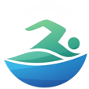

Importação do TrainingPeaks
Busque os treinos de natação da semana direto do TrainingPeaks e envie para o Garmin com dois toques.
App para iOS e Android
O Swim2Garmin facilita nadadores importarem seus treinos do TrainingPeaks para o Garmin Connect. Esqueça a complexidade de montar treinos passo a passo na interface da Garmin.

Swim2GarminBusque os treinos de natação da semana direto do TrainingPeaks e envie para o Garmin com dois toques.
Adicione o treino a um dia específico do calendário do Garmin Connect.
O treino é salvo com a distância total no nome (ex.: Swim2Garmin 3000m).
No primeiro uso, faça login no Garmin Connect (e, se quiser importar treinos, no TrainingPeaks) pela própria tela do app. As sessões ficam salvas, então o login é feito só uma vez.
Uma série por linha, com repetições, distância, descrição e descanso. Séries complexas com repetições e descansos variados são suportadas.
1200m A1 (75m crawl, 25m costas) com 30"26x50m (1 palmateio, 1 ondulação…) com 15"3150m A1 crawl segurando palmar com 20"44x25m A3 crawl palmar pé-pato pqp P com 45"550m A1 livre com 30"
Abra o Garmin Connect, cole o treino na extensão, confira a visualização prévia e importe com um clique.